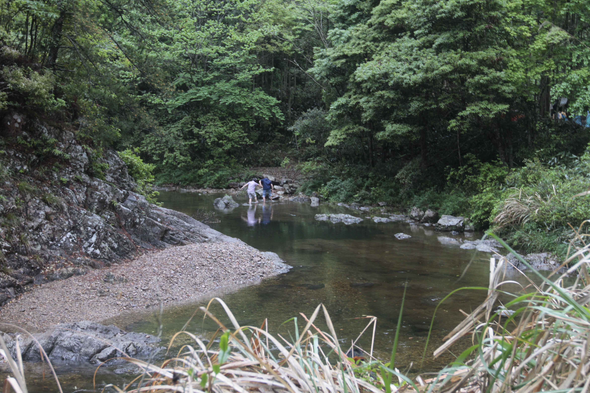

发信人: taofangying (色. 驴), 信区: outdoor
标 题: 楠溪江糖水贴
发信站: 饮水思源 (2011年05月03日19:39:52 星期二)
第一天营地处的美景
screen.width - 200){this.width = screen.width - 200}">

 screen.width - 200){this.width = screen.width - 200}">
我们队伍最早到占据了二楼的小阁楼扎营
screen.width - 200){this.width = screen.width - 200}">
风雨中的营地
screen.width - 200){this.width = screen.width - 200}">
副领队组扎在马蜂窝上的营地，给力的说
screen.width - 200){this.width = screen.width - 200}">
第一天的晚饭时间太充裕了，导致大家都吃的很high
screen.width - 200){this.width = screen.width - 200}">
screen.width - 200){this.width = screen.width - 200}">
我们组的晚饭，烙饼的原材料
screen.width - 200){this.width = screen.width - 200}">
我们组的徐大厨，眼神多专注啊
screen.width - 200){this.width = screen.width - 200}">
第一张饼，还没经验，长得有点难看，味道其实很不错
screen.width - 200){this.width = screen.width - 200}">
晚饭做到一半突然瓢泼大雨来了~我们就这么坚持着
screen.width - 200){this.width = screen.width - 200}">
大厨终于做得一张好饼
screen.width - 200){this.width = screen.width - 200}">
领队组，一个人做，5个人看
screen.width - 200){this.width = screen.width - 200}">
拍的比较满意的一张~~~~主要是模特给力~
screen.width - 200){this.width = screen.width - 200}">
下面隆重推出三个表情帝~第二张照片因为广角镜头的关系，四角有桶形畸变
screen.width - 200){this.width = screen.width - 200}">
screen.width - 200){this.width = screen.width - 200}">
用筷子翻饼显然淡定多了
screen.width - 200){this.width = screen.width - 200}">
傍晚时候的楠溪江
screen.width - 200){this.width = screen.width - 200}">
徐大厨炉火纯青的烙饼技术
screen.width - 200){this.width = screen.width - 200}">
这张不知道是哪个神人的杰作啊！！太给力，就一小会儿相机不在我手上

这就是我们几乎全程走在队尾的第四组

神马都可以不拍，就是不能缺了集体照
screen.width - 200){this.width = screen.width - 200}">

各种欢乐的下水
screen.width - 200){this.width = screen.width - 200}">
川哥看到谁了笑得那么开心
还有各种半裸男就不发了~~
最后，人气之星川哥结尾
screen.width - 200){this.width = screen.width - 200}">

--
终究还是爱户外多过爱摄影~
※ 来源:·饮水思源 bbs.sjtu.edu.cn·[FROM: 202.120.52.83]
※ 修改:·taofangying 于 2011年05月03日19:40:17 修改本文·[FROM: 202.120.52.83]
※ 修改:·yanhao 于 2011年05月08日20:27:47 修改本文·[FROM: 202.120.46.4]
|